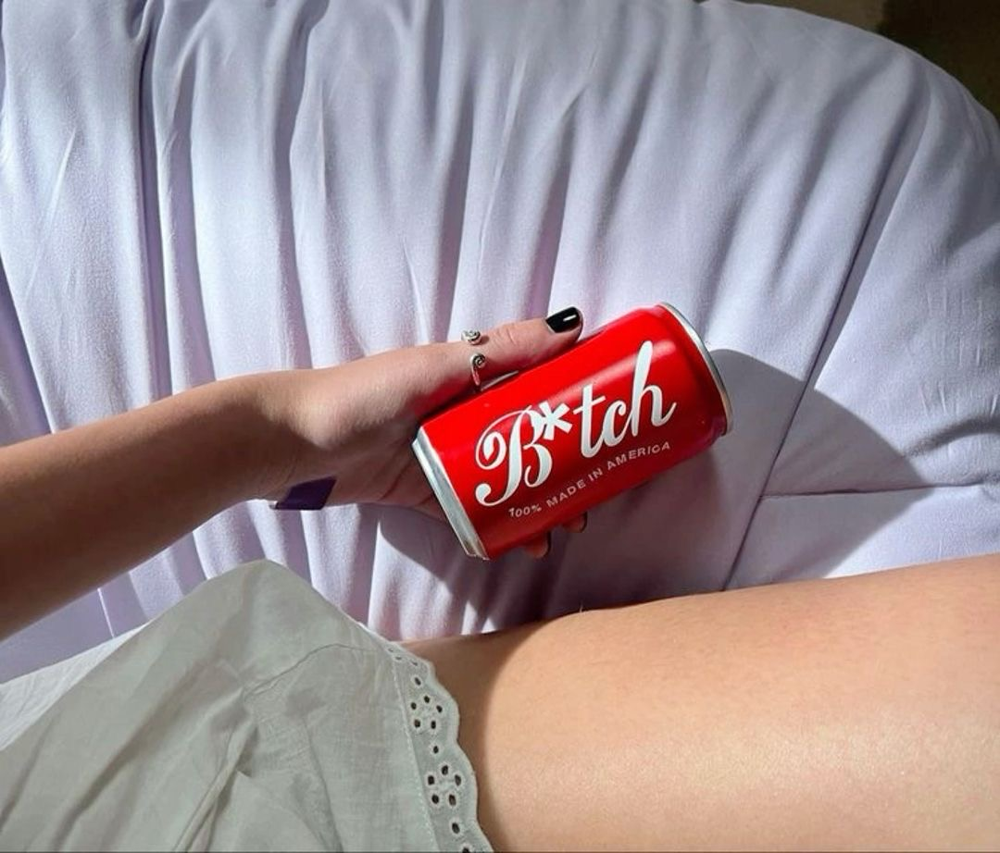
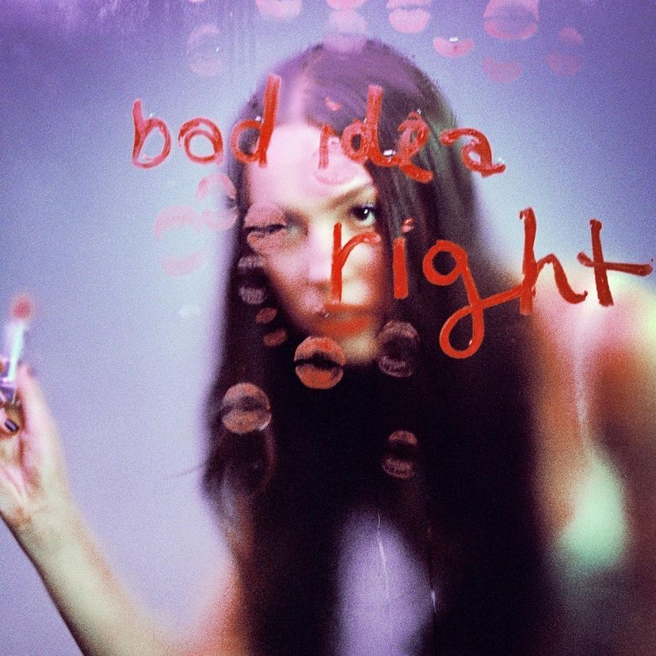
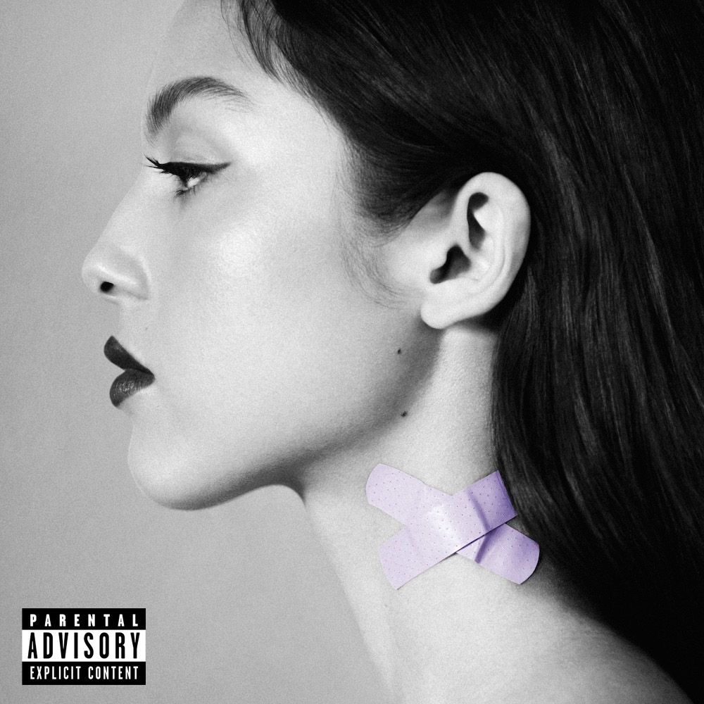
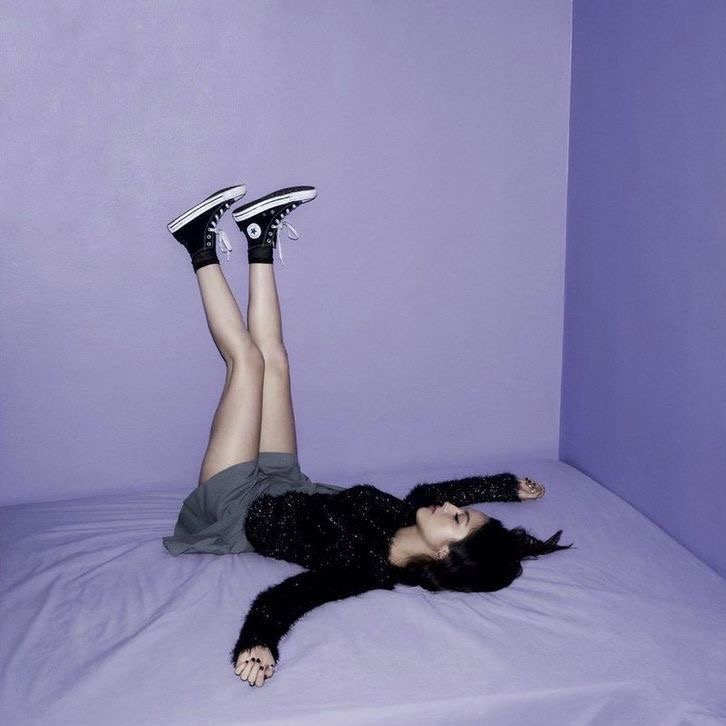
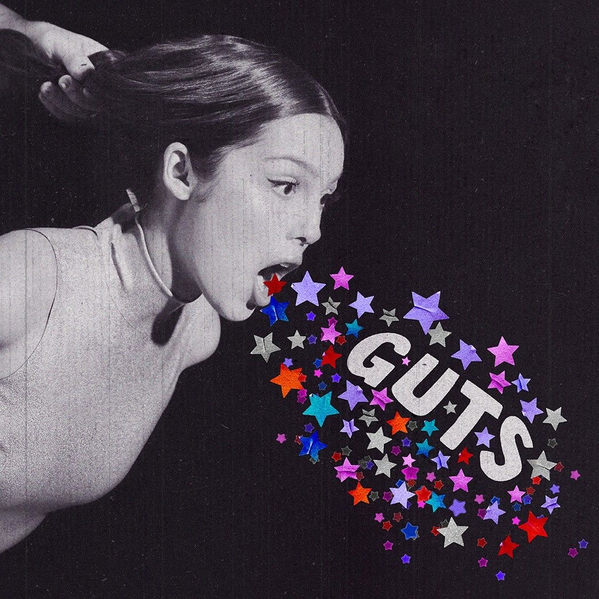
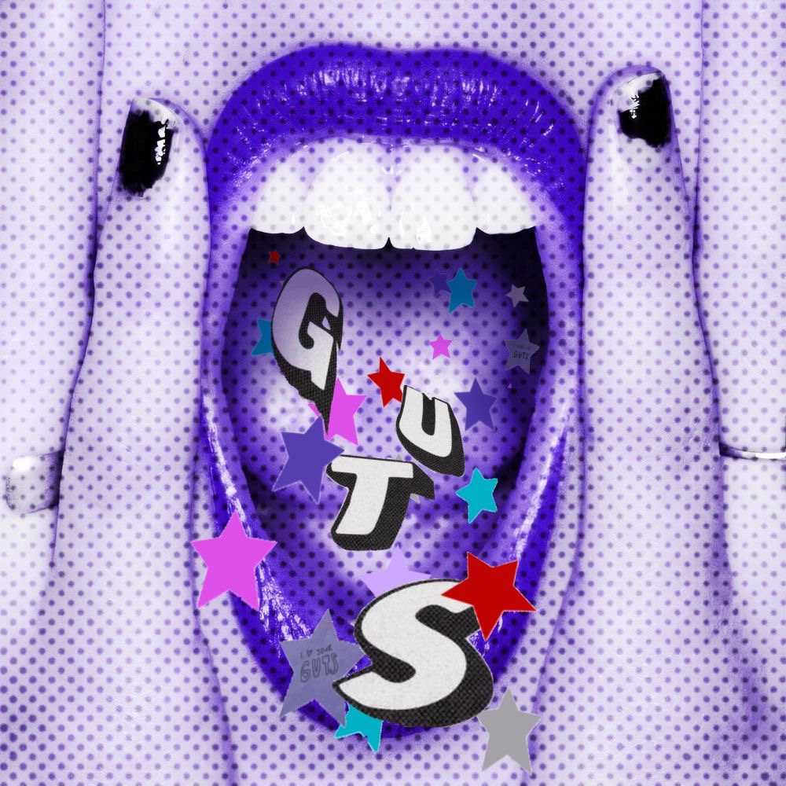
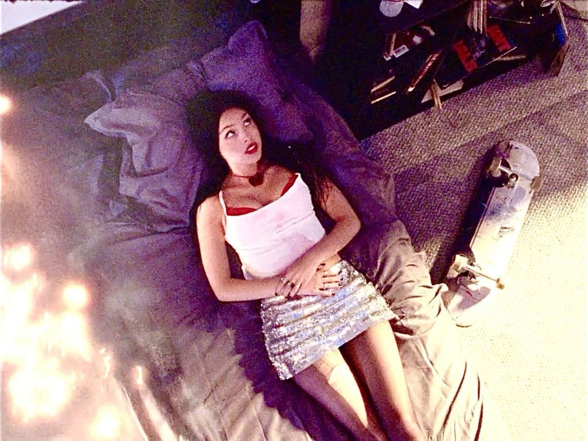
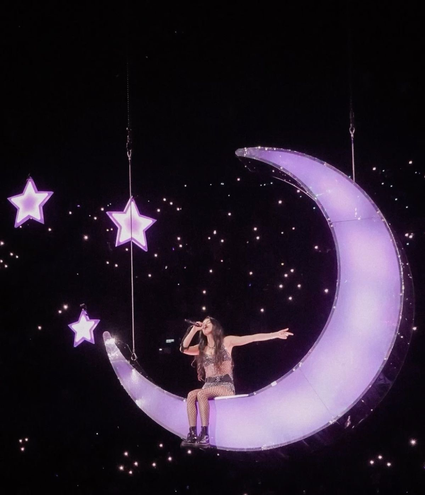
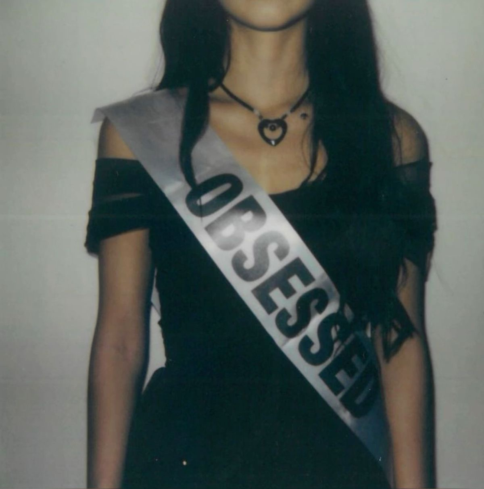

GUTS fue su segundo disco, lanzado el 8 de septiembre de 2023. Es un albúm más experimental que combina pop-rock, rock alternativo y pop-punk."GUTS" explora las inseguridades y cotradicciones de crecer, representa una etapa de cambios y emociones intensas en la que todavia estamos intentando descubrir quienes somos.
"All-american bitch” es la canción que abre GUTS y deja clarísimos a dónde va esta nueva etapa de Olivia. Desde el primer momento combina momentos tranquilos con explosiones de pop-rock, mostrando una personalidad mucho más madura y rebelde que en SOUR. La canción es una critica directa a todas las contradicciones y expectativas que existen sobre las mujeres, la presión constante de ser amable, bonita, exitosa y perfecta al mismo tiempo. Olivia utiliza la ironía para mostrar que detrás de esa imagen aparentemente ideal también existe bronca, frustración y cansancio. Es un tema que maraca el tono del album completo avisándote desde el primer minuto que GUTS va a hablar sobre crecer, equivocarse y tratar de descubrir quién sos.

“Bad idea right?” fue uno de los grandes adelantos de GUTS y mostro un lado mucho más divertida y caótica de Olivia. Se aleja bastante de las baladas de SOUR y utiliza guitarras, batería y una producción inspirada en el pop-rock y el punk. La canción habla de encontrarse nuevamente con un ex aunque Olivia sabe perfectamente que hacerlo probablemente sea una mala idea. Lo interesante es que, Oliviase toma la situación con puro humor, tratando justificar sus propias decisiones con excusas ridículas. Esta mezcla de humor, impulsividad y arrepentimiento representa muy bien la inmadurez y confusión de crecer

“vampire” fue el primer single de GUTS y marcó el comienzo de una etapa oscura para Olivia. La canción empieza con una balada de piano bastante íntima y poco a poco se transforma en un pop-rock mucho más fuerte. Olivia compara a su exnovio con un vampiro, utilizando esta imagen para representar cómo siente que esa relación la dejó emocionalmente agotada. A diferencia de las canciones tristes que conocíamos de Olivia esta vez ella decide hablar desde el enojo. Por eso, “vampire” introduce una de las características principales de GUTS: convertir experiencias dolorosas en canciones llenas de fuerza y poder.

“Lacy” cambia completamente el ambiente del álbum y presenta una canción mucho más delicada e íntima. Olivia utiliza imágenes relacionadas con la belleza para describir a una chica que parece perfecta y que despierta sentimientos contradictorios en ella. La canción habla especialmente de los celos, la comparación y esa sensación de admirar a alguien que a la vez te hace sentir insegura. Musicalmente es una producción suave que refuerza el carácter vulnerable de la canción. A través de esta canción , Olivia nos muestra que los problemas no siempre tienen que ver con relaciones amorosas, sino también con la forma en la que nos vemos frente a otras personas y lo que envía provoca ese pensamiento.

Después de un arranque de disco lleno de energía y caos, "making the bed" llega para bajar las revoluciones y ponerse introspectiva. Aquí Olivia nos muestra una faceta más madura y reflexiona sobre cómo algunas de las situaciones que la hacen infeliz también son consecuencia de sus propias decisiones. El título no es casualidad: da la idea de que tenemos que enfrentarnos a las consecuencias de las cosas que hacemos. Con una instrumentación suave donde ,las guitarras y una producción más tranquila la producción le da todo el espacio a su voz para que la letra golpee donde tiene que golpear. Es el momento del álbum donde deja de apuntar con el dedo a los demás y empieza a mirar hacia adentro.
“logical” es una de las canciones más vulnerables de GUTS, Olivia habla de lo que se siente estar en una relación donde sufriste manipulación. La canción utiliza la lógica y las matemáticas como metáforas para mostrar cómo alguien puede hacer que una situación completamente irracional parezca tener sentido. La canción empieza muy suave y va sumando intensidad poco a poco, acompañando toda esa confusión interna. Al final, refleja una de las partes más difíciles y dolorosas de crecer: darse cuenta de que alguien pudo haberte convencido de algo que en realidad no era cierto.

“get him back!” es una de las canciones más divertidas y pegadizas de GUTS, especialmente por la contradicción que existe en su título. Olivia habla de querer vengarse de su ex, pero al mismo tiempo también quiere volver con él. Esa contradicción, sumada al ritmo pop-rock impulsivo, capta perfecto lo caótico que es intentar superar a alguien cuando todavía tenés sentimientos encontrados. En lugar de elegir entre el enojo o el amor, la canción abraza el lío de sentir las dos cosas al mismo tiempo.

“love is embarrassing” presenta una mirada mucho más irónica sobre las relaciones y sobre las cosas que hacemos cuando estamos enamorados. Olivia repasa las ridiculeces que uno hace cuando está enamorado, cómo idealiza a alguien y la vergüenza que da después darse cuenta de tanta energía gastada.Tiene un sonido pop-rock ligero con guitarras muy marcadas que le da una vibración súper descontracturada. Olivia se ríe de sí misma y de las decisiones que tomó por estar enamorada. La canción representa muy bien ese momento en el que mirás hacia atrás y pensás: “¿cómo pude hacer todo eso por esta persona?”.

“the grudge” vuelve a presentar una Olivia mucho más sensible después de varias canciones fuertes. La canción habla de guardar resentimiento hacia alguien que hizo algo que todavía no conseguimos perdonar del todo. El sonido es mucho más tranquilo y melancólico, haciendo que la atención se centre en la voz de Olivia. A lo largo de la canción aparece una contradicción entre olvidar lo que pasó y seguir teniendo rencor. Por eso, “the grudge” muestra que superar una situación no siempre significa olvidarla inmediatamente ni completamente.

“pretty isn’t pretty” habla de la presión sobre todo de las mujeres por cumplir los estándares de belleza y de la sensación de que nunca hacemos suficiente y nunca somos suficientes que se siente al no alcanzarlos. Olivia describe cómo cambiar nuestra apariencia no necesariamente hace desaparecer nuestras inseguridades. Musicalmente combina pop con elementos de rock y una producción más oscura, creando una atmósfera bastante diferente a las canciones más divertidas del álbum. La canción también conecta con uno de los temas centrales de GUTS: lo difícil que es intentar descubrir quién sos cuando sentis que deberías cambiar para cumplir un estándar. Es una reflexión sobre cómo la búsqueda de la perfección puede convertirse en un ciclo interminable de sufrimiento, esfuerzo y desencuentro con uno mismo.

“teenage dream” cierra el álbum original y es una de las canciones más personales de GUTS. Olivia habla de lo que significa crecer y de esa sensación de miedo al pensar de que su mejor momento haya pasado demasiado rápido. A diferencia del resto del disco, dominado por energía y guitarras potentes, esta pista se apoya en un piano suave y una producción mucho más tranquila que transmite una nostalgia muy clara. Ya no va de desamores o parejas, sino de su propio futuro y de lo complejo que resulta construir una identidad al dejar la adolescencia. Por eso, funciona como un cierre emocional perfecto para un álbum que justamente habla de los dolores y las inseguridades de crecer.